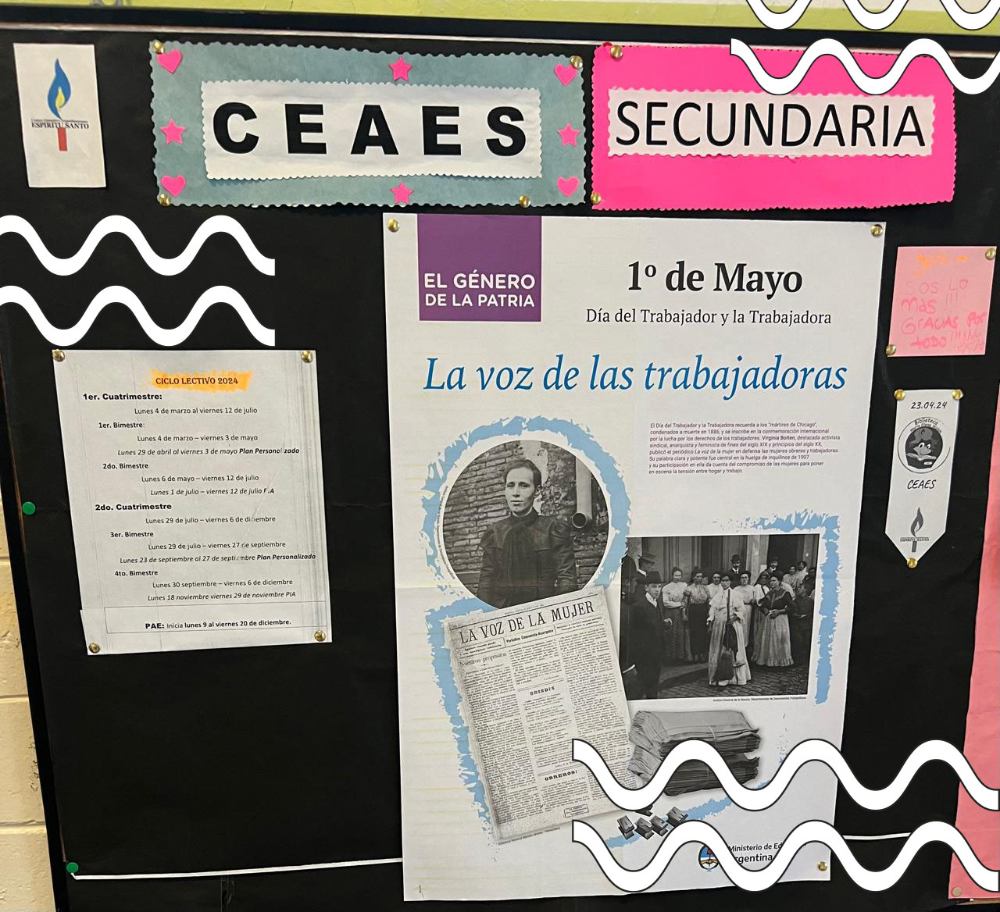
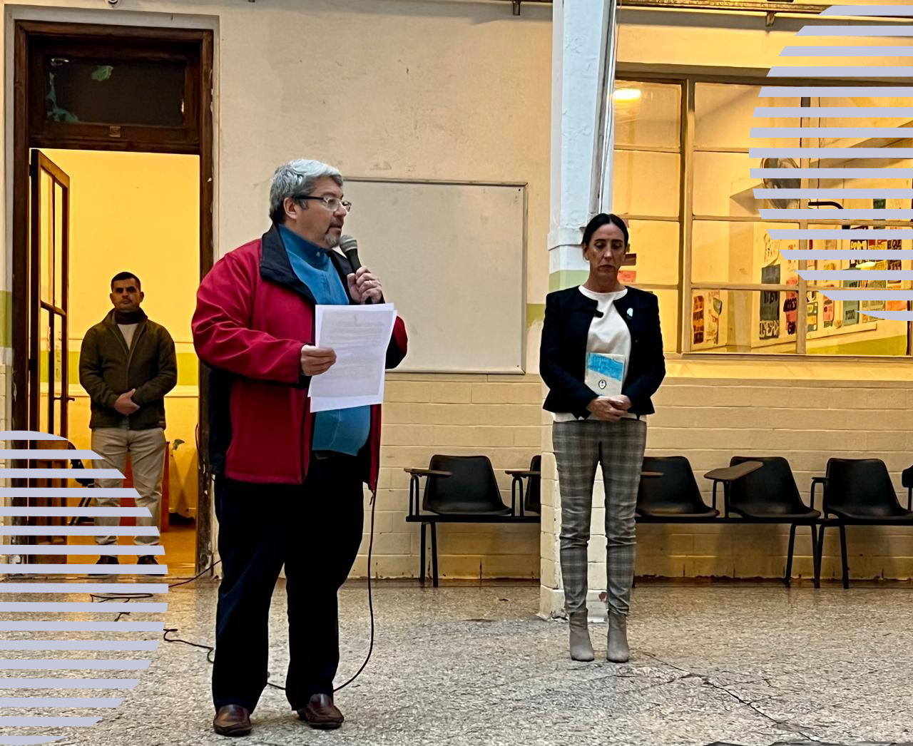
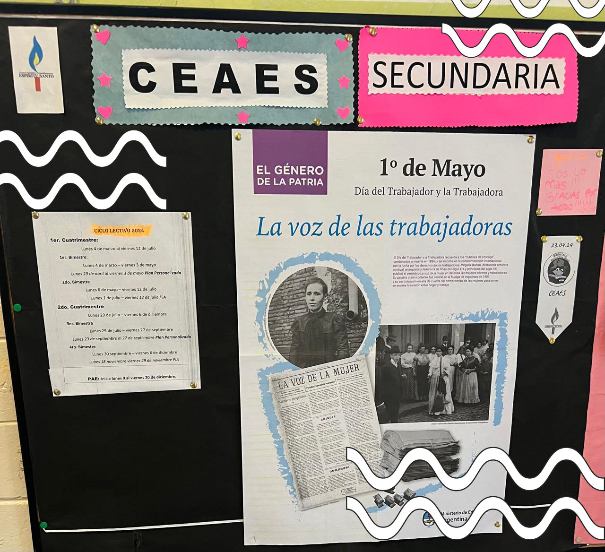
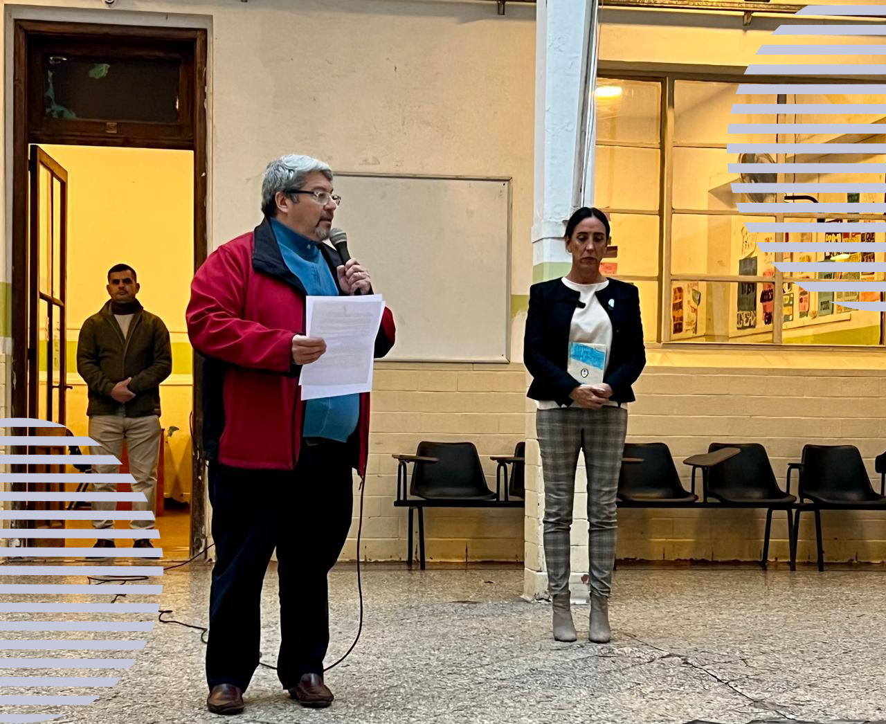

Día del trabajador
Aquí tenemos la constitución nacional, en este pequeño libro se encierra un arma poderosa para ustedes. Una herramienta que los protege y los protegerá de los abusos de poder, de los inescrupulosos, de los que piensan en definitiva en sembrar el mal sobre este país.
Ayer se conmemoro el día internacional del trabajador, más que un día de felicitaciones es un día mundial de lucha y la constitución nacional en sus artículos 14 y 14 bis garantiza entre otras condiciones dignas de trabajo y remuneraciones justas. Si a ustedes no se les respetaran sus derechos laborales aquí tienen el arma para defenderse.
Ustedes están acá entre otros motivos porque este librito garantiza la educación secundaria en todas las orientaciones y tiene la finalidad de desarrollar a los adolescentes en el ejercicio pleno de la ciudadanía.
El derecho a la salud está consagrado aquí, a su salud y a toda persona a desarrollar su existencia, artículos 35, 41, 42 y 75.
Si hablamos en cambio del medio ambiente se garantiza desde esta norma jurídica fundamental un medio ambiente sano, equilibrado y apto para el desarrollo humano. Articulo 41.
Otros derechos por mencionar algunos de los muchos:
- Emisión de moneda propia argentina. Artículo 75.
- Libertad de circulación. Articulo 10.
- Derecho a los animales. Articulo 41.
Esta es un arma poderosa con la que cuentan si vulneran estos y más derechos.
Pero en cambio, si son ustedes los que vulneran a otros derechos de salud, trabajo, circulación, educación y medio ambiente sepan que quienes se vean afectados por ustedes van a usar la misma arma, la misma poderosa herramienta. Serán juzgados si no cumplen con estos derechos consagrados. Y nadie puede argumentar desconocimiento de la constitución nacional si se les imputa de un delito.
Vale decir, que todos y todas tenemos la misma arma, todos y todas nos regimos bajo este mismo contrato para convivir en paz y libertad. Costo tiempo, sangre, lágrimas y vidas llegar a este contrato. Es hacer que otros respeten nuestros derechos pero nosotros también debemos respetarlos para los demás. Derechos y obligaciones son dos caras de una misma moneda.
Aquí está el pasaje para desarrollarnos como seres humanos en el presente, en el futuro y haciendo honor a nuestro pasado. Para nosotros, para nuestra posteridad y para todos los hombres y mujeres del mundo que quieran habitar el suelo argentino invocando la protección de Dios fuente de toda razón y justicia.
Vale decir, que todos y todas tenemos la misma arma, todos y todas nos regimos bajo este mismo contrato para convivir en paz y libertad. Costo tiempo, sangre, lágrimas y vidas llegar a este contrato. Es hacer que otros respeten nuestros derechos pero nosotros también debemos respetarlos para los demás. Derechos y obligaciones son dos caras de una misma moneda.
Aquí está el pasaje para desarrollarnos como seres humanos en el presente, en el futuro y haciendo honor a nuestro pasado. Para nosotros, para nuestra posteridad y para todos los hombres y mujeres del mundo que quieran habitar el suelo argentino invocando la protección de Dios fuente de toda razón y justicia.
 


